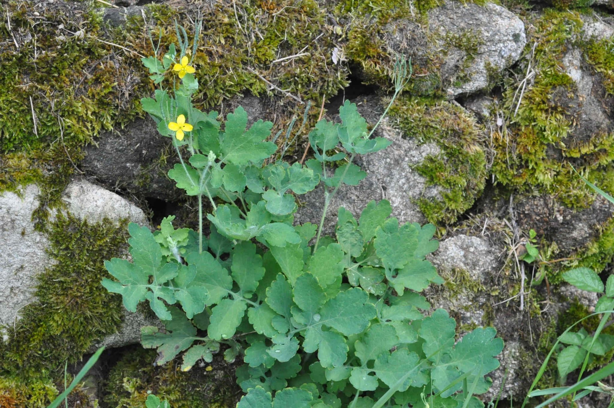
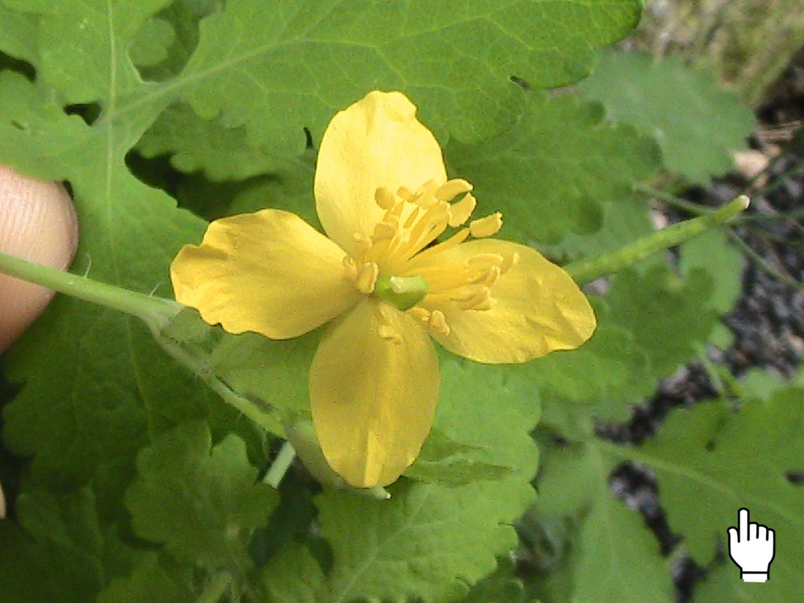
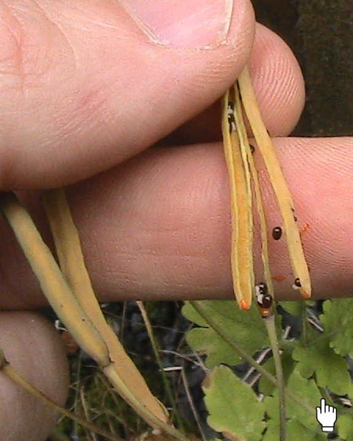
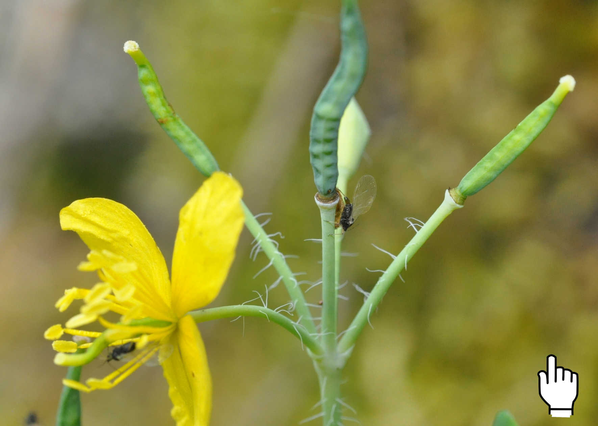
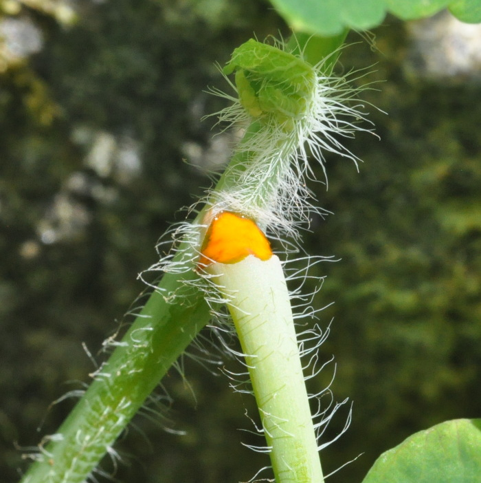
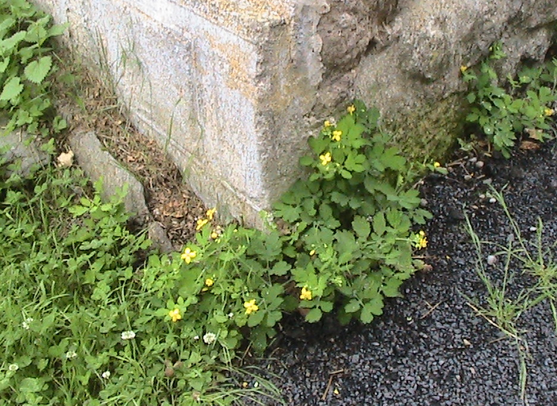

Chelidonium majus

Vous rencontrerez facilement cette plante dans les villes, le long des murs ou dans les friches. C’est une espèce pionnière (se développant sur un substrat nu, sans sol). La Grande Chélidoine (se prononce « kélidoine ») est une Angiosperme facile à reconnaître, grâce à son latex jaune…mais les caractères floraux peuvent induire en erreur un botaniste débutant :
La fleur est de type 4, et le fruit une silique (un fruit allongé qui devient sec à maturité, entraînant son ouverture brutale, et la libération des graines*). Des caractères qui font penser aux Brassicacées…Mais regardons mieux cette fleur…elle contient de nombreuses étamines (on dit « n étamines ») contrairement aux Brassicacées qui en ont 6 (4 longues et 2 courtes) ; ainsi que 2 sépales (qui tombent tôt lors de la floraison) : des critères qui font des cette plante un membre des Papavéracées, la famille du coquelicot et du pavot.


fruit à maturité*la dispersion ainsi assurée par autochorie, est également favorisée par l’action des fourmis(1) qui se nourrissent de la petite partie charnue entourant chaque graine, qui pourra ensuite germer.

L’inflorescence est en ombelle. Une ombelle lâche, certes, mais qui peut faire penser aux Apiacées (Ombellifères), caractérisées notamment par cette inflorescence (néanmoins, l’absence de gaine autour du pétiole permettra d’éliminer cette hypothèse).
Le liquide jaune qui s’écoule à la cassure d’un organe n’est pas de la sève, mais du latex, contenu dans des canaux dédiés (dits « laticifères », littéralement « qui portent du latex »). De nombreux alcaloïdes toxiques(2) y sont présents, qui font de cette plante un remède utilisé contre les verrues : en application cutanée régulière, le latex nécrose les tissus et peut aider à la disparition des verrues.


Sources :
(1) Flore des friches urbaines, Muratet, Muratet, Pellaton, Ed. Xavier Barral, 2017
(2) Guide de la flore de Haute-Loire, Tort et al. tome 1 Ed. Jeanne d’Arc, 2008